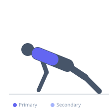

Exercise guide / Scapular Push-Up
Scapular Push-Up
The scapular push-up is a rehabilitation drill that trains serratus anterior strength and scapular protraction control in a push-up position. Unlike a standard push-up, the elbows remain locked throughout and only the shoulder blades move — protracting (spreading apart) and retracting (pinching together). It is prescribed for serratus anterior weakness, scapular winging, and shoulder instability.
Primary muscles
serratus anterior
Secondary muscles
lower trapezius
Stabilizers
transverse abdominis
Equipment
No Equipment (Bodyweight)


Starting position
- Begin in a standard push-up position with arms fully extended, hands shoulder-width apart.
Setup
- May also be performed from the knees for beginners, or against a wall for very early rehabilitation stages.
Steps
- Step 1: Assume a push-up position with arms straight and body in a rigid plank.
- Step 2: Allow the shoulder blades to pinch together (retract), lowering the chest slightly between the arms without bending the elbows.
- Step 3: Push the shoulder blades apart (protract), rounding the upper back slightly and reaching the hands into the floor.
- Step 4: At full protraction, the upper back should be slightly rounded and the shoulder blades as far apart as possible.
- Step 5: Return to the retracted position with control and repeat.
Coaching cues
- Arms stay completely straight — this is all shoulder blade
- At the top, push the floor away and round the upper back like a cat
- Feel the muscles around the shoulder blades working
Breathing
- Exhale on protraction (spreading apart). Inhale on retraction.
Range of motion
- Full retraction to full protraction. The range is typically 2–5 cm of vertical body travel.
Tempo
- 2 seconds retract, 2 seconds protract. 15–20 reps × 2–3 sets.
Common mistakes
- Bending the elbows — the elbows stay locked throughout
- Moving the hips or lower back rather than isolating the shoulder blades
- Not achieving full protraction at the top
Safety
- Appropriate for most populations including early post-operative shoulder patients when cleared by a clinician
Training
- strength: 15–20 reps
- strength: 2–3 sets
- Rest: {'strength': 60}